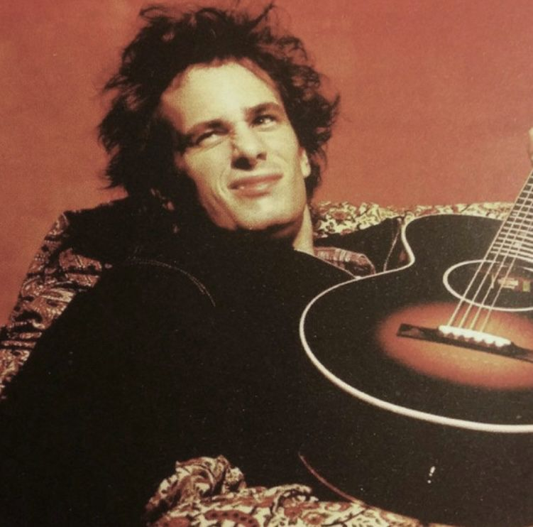
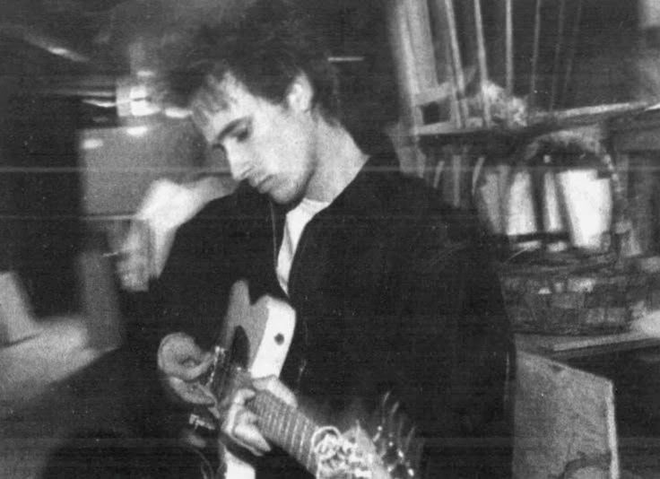
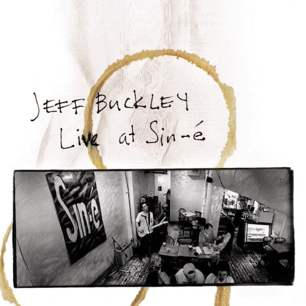
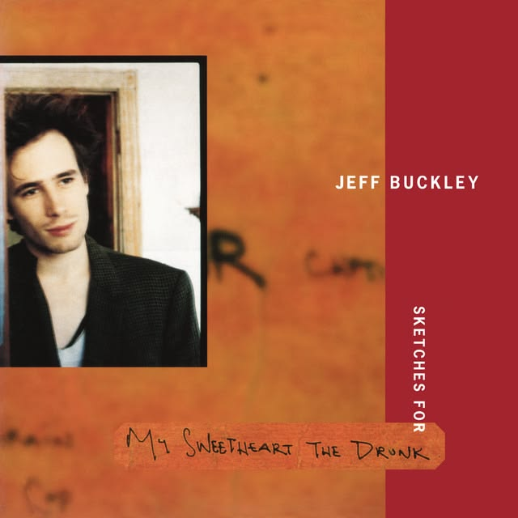
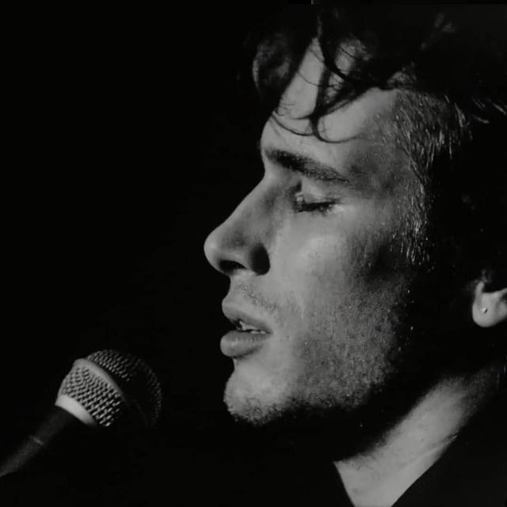
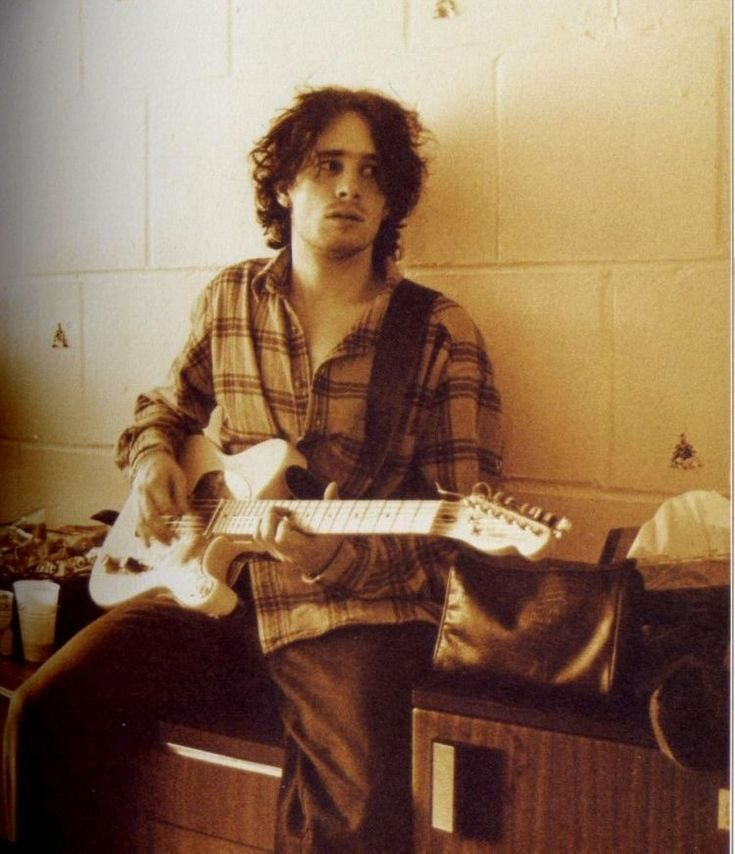
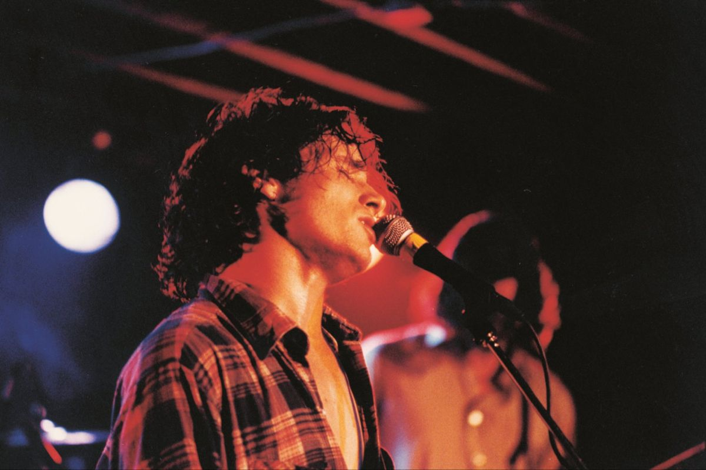
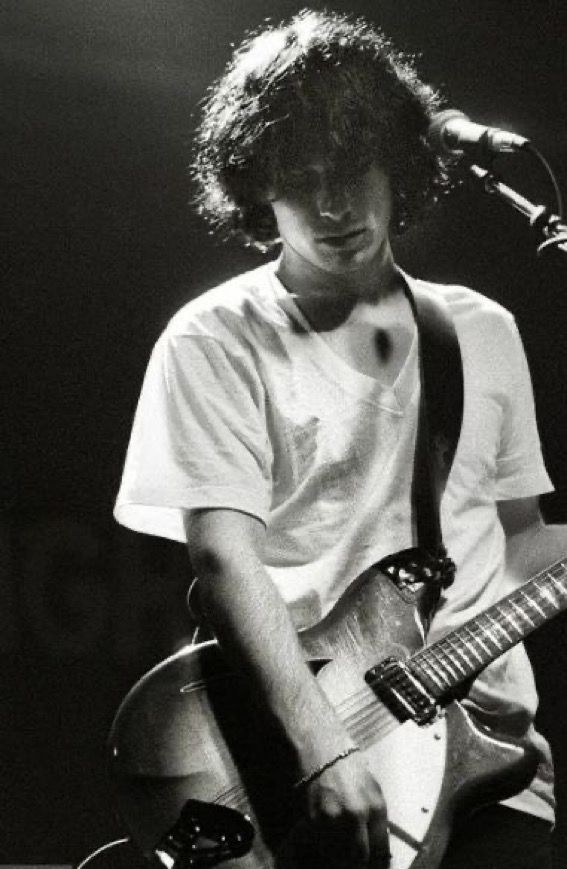
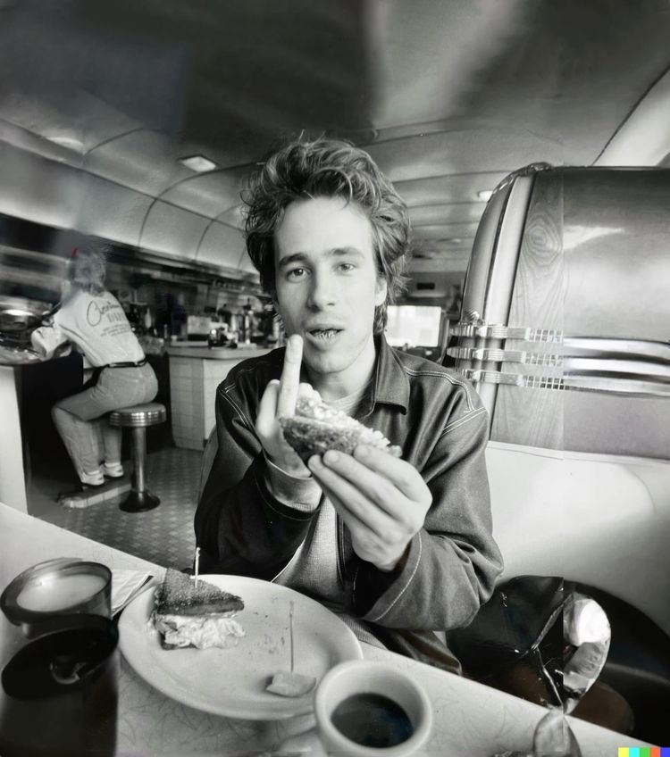

The beginning
Jeff Buckley is born in Southern California on November 17.

AN INDEPENDENT FAN PROJECT
BEYOND THE VOICE
Jeff Buckley was an American singer, songwriter and guitarist whose extraordinary voice and emotionally expressive music reached far beyond the boundaries of any single genre.
From the small clubs of New York to the release of Grace, his music carried a rare combination of vulnerability, intensity and musical curiousity.
This archive is a place to explore the person behind the recordings, the photographs and the music that continues to find new listeners.

Jeff Buckley is born in Southern California on November 17.
He moves to New York City and becomes part of its music and performance scene.
His early recordings capture the intimacy and unpredictability of his solo performances.
His debut studio album is released, bringing together his songwriting, guitar and distinctive vocal performances.
His life ends in May while he is working on his new music in Memphis. His unfinished recordings are later released as Sketches for My Sweetheart the Drunk.
A few places to begin, and a few places to return to.
1994 · STUDIO ALBUM
The only studio album released during his lifetime.
EXPLORE ALBUM ↗
021993 · LIVE EP
An intimate glimpse into his solo performances in New York.
EXPLORE RECORDINGS ↗
031998 · POSTHUMOUS ALBUM
An unfinished body of work that offers a glimpse into the direction his music was taking.
EXPLORE RECORDINGS ↗A NEW SONGS TO SIT WITH
Select a song to reveal a listening note.
Faces, stages, quiet moments, and everything in between.





A work in progress. Every photographs has a story beyond the frame.
05 / WHAT REMAINS
There is something remarkable about discovering an artist years after their story has ended, and finding that the music still feels immediate.
His recordings continue to travel from one person to another, each listener finding something different in the same songs.
This archive is one small way of keeping that discovery alive.